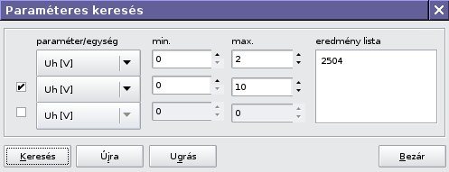

V/3. Paraméteres keresés

A legfeljebb három megadott paraméter alapján keres az aktuális kategóriában,
a találatokat az eredménylistában jeleníti meg.
Az eredménylista elemére
duplán kattintva a táblázat mezôkurzora a kívánt elemre ugrik.
Vissza a Tartalomjegyzékhez